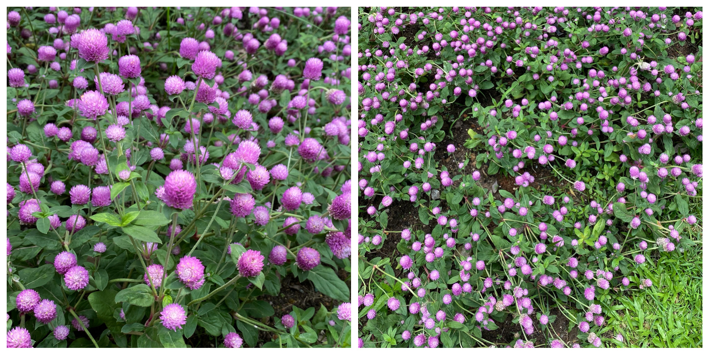

朝顔
668 如果你想说，那我就在听．
这种花，平时只会开得零零星星，枯萎了的时候还会原封不动整朵在那里．以前我觉得不怎么好看，尤其枯萎了之后．这次看到一大丛二十多米的花“海”的时候，觉得也挺好看的．
这宝贵的一分钟．虽然只看到小眼睛和额头，不过也能感受到气色差了不少．看到咳得身子向后变的时候，感受整个人都要咳飞一样……
特别喜欢看到她的眼睛弯成一道美丽的弧线．只想摸摸她的头，跟她说：加油．
后来认真地数了一下，应该是第4次剪头发．7月1号之前一次，后面两次，今天最第4次．想说这次他5分钟就赚了我20块，时薪挺高的．准备发送的时候，才想起来，上一次我好像说过类似的话．有点失忆了．
想起来，已经有一年零7个月没有去阿姨那里剪发了．这段时间都是临时起意，结果就找陌生的Tony去剪了．
生平第一次感觉，一切是这么的快，又这么的慢．
知道丽华憔悴起来，心痛．不过，想她不要因为这样而不想让我知道．喜欢她蹦蹦跳跳的样子．
假装去楼下拿快递溜了一圈，看到没有见过的小花．不知道丽华有没有见过．

这个世界依然充满未知．
今天应该是开学了，到处都是一群群的学生．
想必她也是个满满仪式感的人，以前开学的时候一定会坚定地给自己说一句新学期加油．然后元气满满地迎接新的一天．
元気いっぱいの一日
我想跟她说：好起来，加油！